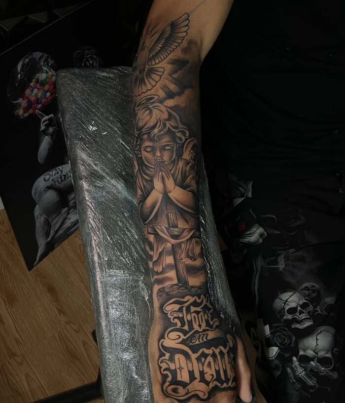
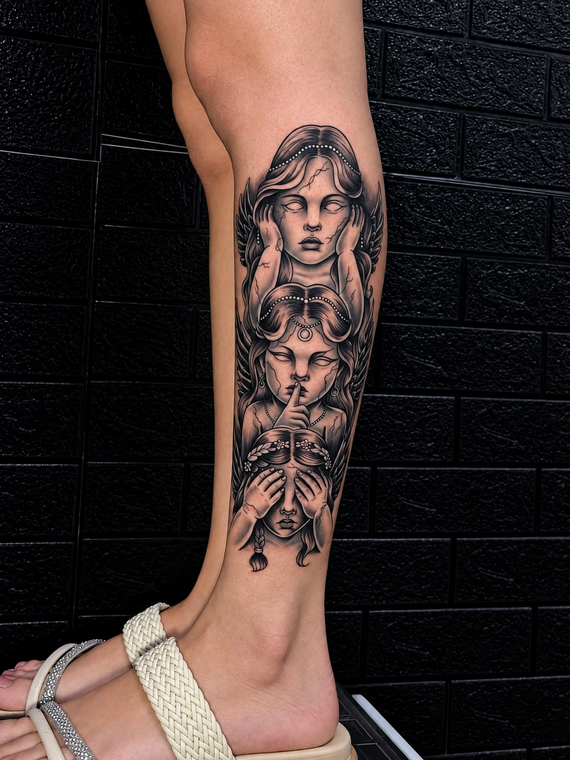
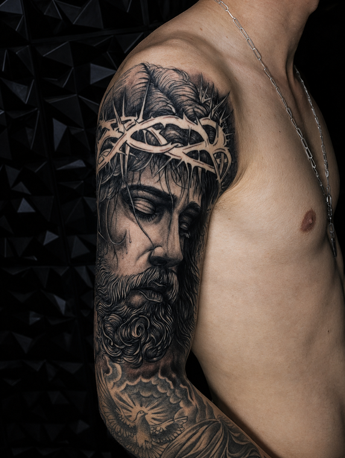
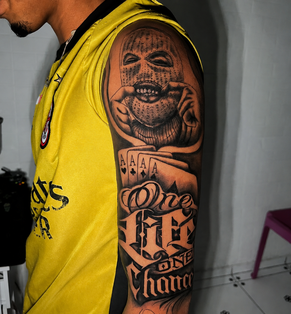
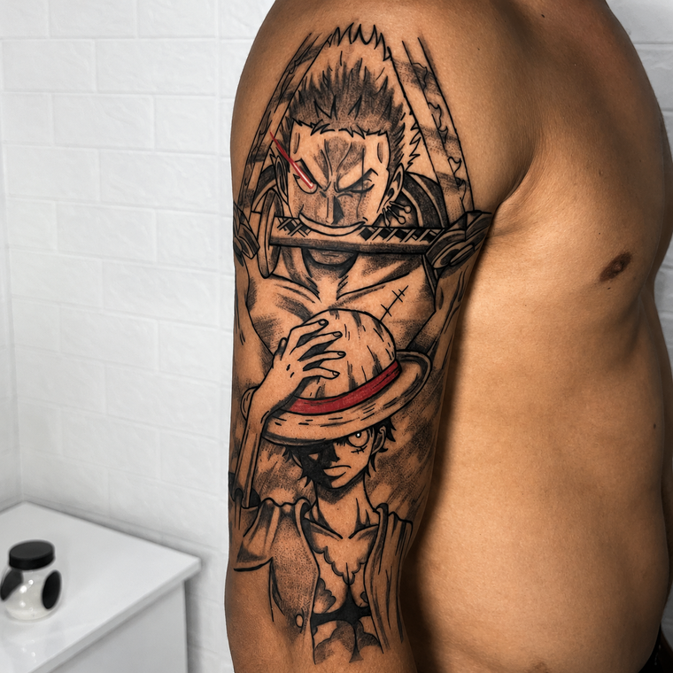
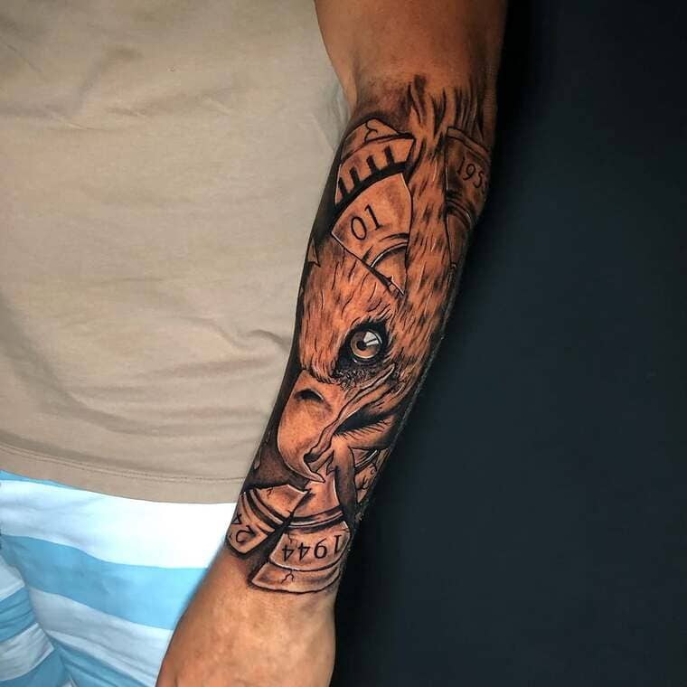
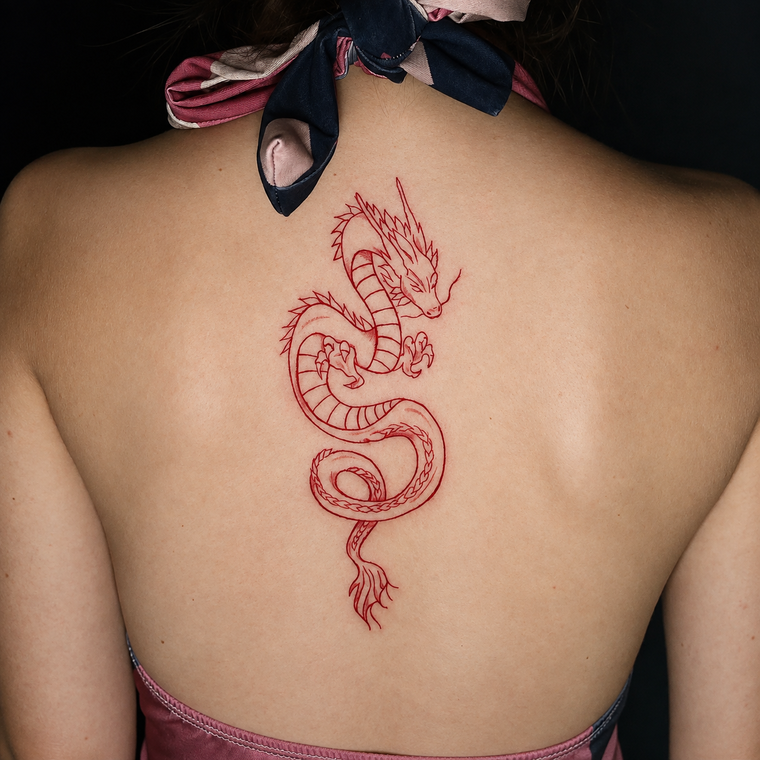

sua ideia na agulha sua essência na pele.
Projetos autorais desenhados com propósito, feitos sob medida para quem busca a tatuagem como identidade, não como enfeite.
samuel sanguinete
Cada peça é construída como um estudo de luz e sombra antes de tocar a pele.
Especialista em Black & Grey Realism, trabalhamos exclusivamente com projetos grandes e personalizados, onde profundidade, contraste e nível de detalhe conduzem cada decisão. não trabalhamos com old school, aquarela, cartoon ou tatuagens coloridas — o compromisso é inteiro com a técnica do preto e cinza
Atendimento por consulta, com projeto desenvolvido junto ao cliente antes da primeira sessão.

Fechamento - Antebraço e Mão
Composição religiosa autoral reunindo anjo orante, cruz com tecido drapeado e lettering. Trabalho em preto e cinza com alto nível de detalhamento, contraste e um sombreamento impecável.
trabalhos selecionados






do esboço à pele
-
01
consulta
Conversa sobre a ideia, referências e exepectativas antes de qualquer traço.
-
02
esboço
Desenho autoral desenvolvido e aprovado com você antes da sessão.
-
03
sessão
Execução com o tempo necessário, respeitando o ritmo de cada projeto.
-
04
acabamento
Orientações completas de cuidado pós-tatuagem para a melhor cicatrização.